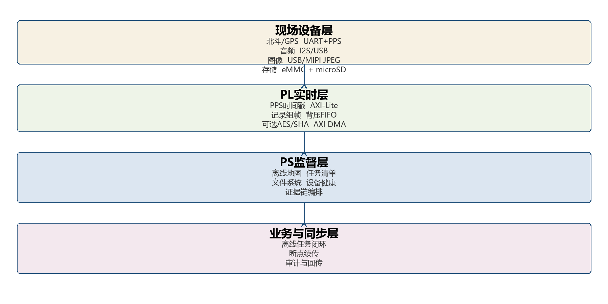

北斗 / GNSSZED-F9P / 14 颗卫星 / 2.1 m
正常
2026-09-29 / 试点区域 A
今日现场任务
待执行
0
项任务
进行中
0
项任务
证据记录
0
条已加密
待同步
0
条记录
本地任务清单
执行队列
T-01
任务详情
北口地质断面复核
沿北口断面完成 5 个采样点记录，采集岩层照片和现场说明。
- 目标位置
- N31.7124 / E118.4821
- 计划时间
- 10:30
- 预计航程
- 2.4 km
- 采集要求
- 照片 / 录音 / 点位
完成度
55%
StarNavi / 离线矢量图层
现场导航
N31.7124 E118.4821 当前坐标
2.1 m 定位精度
NE 042° 行进方向
AES-256-GCM / SHA-256 CHAIN
现场证据记录
RECENT LOCAL RECORDS
本地记录
TAMPER EVIDENT
证据链状态
根摘要
7ac4f2d1e8b6...
最新记录
a8c19f03d62b...
- 加密模式
- AES-256-GCM
- 签名方式
- Ed25519 批签名
- 密钥载体
- ATECC608B / 不可导出
- 断链策略
- 隔离，不自动修复
STORE AND FORWARD
断点续传
连接状态
离线
本地队列继续工作
待传记录
12
86.4 MB
上次同步
09:12
服务器已确认
保留策略
180
天 / 云端
LOCAL OUTBOX
同步队列
DELIVERY POLICY
回传规则
- 上传方式
- 64 KiB 分块 / 幂等 ID
- 断点恢复
- 10% / 50% / 90% 三重校验
- 删除条件
- 服务器回执验签通过后删除副本
- 冲突处理
- 保留双方版本，进入人工复核
- 网络策略
- 仅 Wi-Fi 或专网，禁止蜂窝直传
ZYNQ-7020 / OFFLINE STACK
设备与模块状态
PPS 时间戳50 MHz 计数 / 抖动 18 ns
锁定
IMU / Kalman航向漂移 0.7° / 衰减正常
融合
microSD / eMMC写入 12.6 MB/s / 31.8 GB 可用
正常
音频输入16 kHz / 缓冲水位 72%
关注
安全元件ATECC608B / 设备绑定正常
已认证
STORAGE BUDGET
本地容量
系统与地图
12.2 GB
现场证据
9.1 GB
待同步队列
3.5 GB
剩余空间
7.2 GB
SIGNED FIRMWARE
版本基线
- 终端系统
- PDA-OS 1.0.0-rc3
- PL 基线
- Zynq V1.0 Frozen
- DMA 主机
- MicroBlaze DMA V1.0
- 证据格式
- EPK-1 / 64 Byte 对齐
- 自检时间
- 今天 09:06
